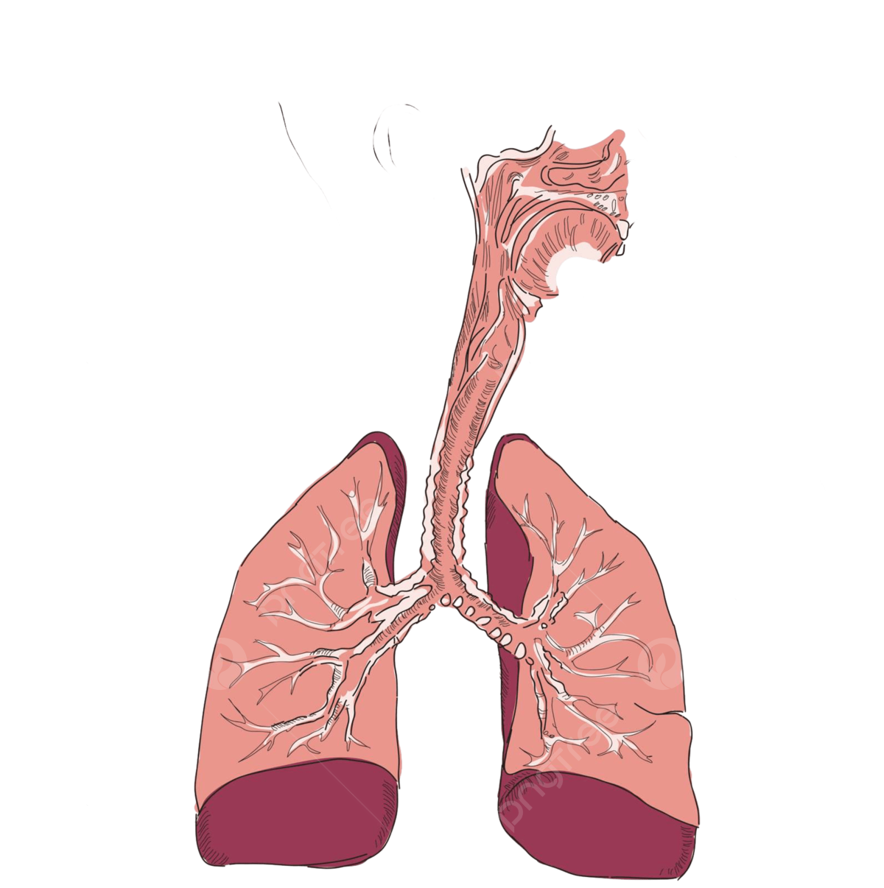
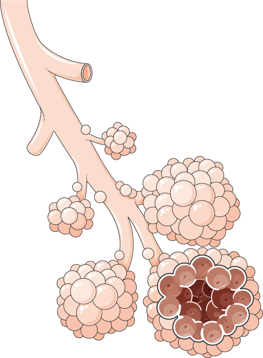
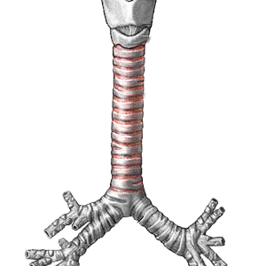

Sistema Respiratório
Porção condutora
É formada pelas fossas nasais nasofaringe, laringe, traqueia, brônquios, bronquíolos e bronquíolos terminais. Ela permite o ar entrar e sair
Porção respiratória
É formada pelos bronquíolos respiratórios, ductos alveolares e alvéolos, que são as partes responsáveis pela ocorrência das trocas gasosas.
Alvéolos pulmonares
Fazem parte da última porção da árvore brônquica e estão localizadas no final dos dutos alveolares. São semelhantes a pequenas bolsas
Bronquíolos
São ramificações dos brônquios, possuem diâmetro de cerca de 1 mm e não possuem cartilagem. Esses ramificam-se nos bronquíolos terminais e respiratórios
Brônquios
São ramificações da traqueia, que penetram cada um em um pulmão pela região do hilo. São denominados de brônquios primários, secundários e terciários
Partes do Sistema E Modelos 3D
Porção condutora
É formada pelas fossas nasais, nasofaringe, laringe, traqueia, brônquios, bronquíolos e bronquíolos terminais. Como o nome indica, essa porção permite a entrada e saída de ar, porém sua função não acaba aí, é nessa parte que o ar é limpo, umedecido e aquecido.
Ver maisPorção Respiratória
É formada pelos bronquíolos respiratórios, ductos alveolares e alvéolos, que são as partes responsáveis pela ocorrência das trocas gasosas. É nessa porção que o oxigênio inspirado passará para o sangue e o gás carbônico presente no sangue passará para o sistema respiratório.
Ver maisAlvéolos Pulmonares
São estruturas que fazem parte da última porção da árvore brônquica e estão localizadas no final dos ductos alveolares. São semelhantes a pequenas bolsas, apresentam uma parede epitelial fina e são o local onde ocorrem as trocas gasosas. Geralmente, os alvéolos estão organizados em grupos chamados de saco alveolar.
Ver maisBronquíolos
São ramificações dos brônquios, possuem diâmetro de cerca de 1 mm e não possuem cartilagem. Esses também ramificam-se, formando os bronquíolos terminais e, posteriormente, os bronquíolos respiratórios. Os bronquíolos respiratórios marcam a transição para a parte respiratória e abrem-se no chamado ducto alveolar.
Ver maisBrônquios
São ramificações da traqueia, que penetram cada um em um pulmão pela região do hilo. Os denominados de brônquios primários penetram pelos pulmões e ramificam-se em três brônquios no pulmão direito e dois no pulmão esquerdo. Os chamados de secundários ramificam-se dando origem a brônquios terciários, que se ramificam dando origem aos bronquíolos.
Ver maisControle da respiração
Os seres humanos possuem neurônios na região do bulbo que garantem a regulação da respiração. O bulbo percebe alterações no ph do líquido do tecido circundante e desencadeia respostas que garantem alterações no ritmo respiratório.
Ver mais